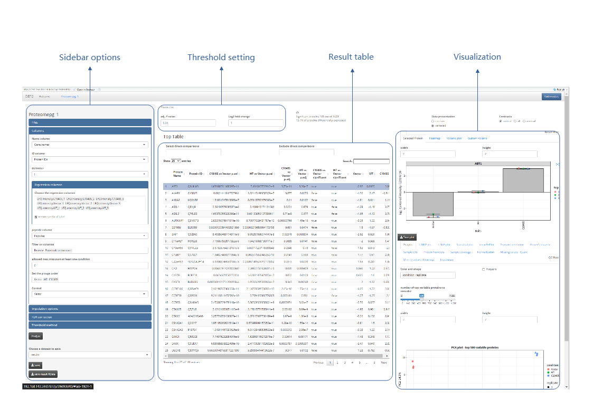

Welcome to the shiny app of DEP2. Here we provide an interactive platform for biologists with little programming experience. This shiny application provides a differentially analyzing pipeline for various types of mass spectrometry-based quantitative proteomics data, including protein-level quantitative data and peptide-level quantitative data. Differential analysis steps including data filter, normalization, imputation, statistical test and FDR correction. To extend compatibility of inputs generated by various quantitative software, nearly all customization options in DEP2 are included in this application. Default parameters and detailed tips are provided to guide unfamiliar users. Generally, the order of the analytical steps is from the top to the bottom in the sidebar. To build an integrative toolkit, several additional analysis modules based on other packages are available. Analyze functions are separated into individual modules. Further details can be available in the DEP2 website: mildpiggy.github.io/DEP2/articles/04_app_demo.html.
Analysis modules can be imported by clicking Add module and selecting the desired analysis module. The modules are categorized into two types: Omics analysis and Post analysis. The former focuses on differential tests, data exploration, and visualization, while the latter focuses on functional analysis and multi-omics comparison. After adding a selected module, a new tab will be added to the application page. The tab’s name will be a combination of the analysis type and a serial number. For omics analysis, a unique remark name is required as a title or label.
This application offers four types of omics differential analysis pipeline to choose from.
Quantificated proteome(based on proteingroup quantification)
This module performs differential analysis of protein-level quantitative data, such as intensity, LFQ intensity, or quantity.
Quantificated proteome(based on peptide quantification)
This module performs differential analysis of proteins based on peptide-level quantitative data through peptide-to-protein aggregation.
Modification-specific proteome(modified peptide quantification)
This module performs differential analysis of modification-specific peptides by using peptide quantity obtained from modification-specific enrichment.
Additional transcriptome
This module performs differential analysis of parallel transcriptome using the DEseq2 package.
This module performs a differential expression/enrichment test for protein-level (proteingroup) quantity data in tabular input (.txt file) format, which is generated by various quantitative proteomics software such as MaxQuant. The test is conducted using the generalized approach limma. Below is the graphical user interface illustration of this module.

Options for analyzing DEP2 are located in the sidebar area. In the DEP2 pipeline, the expression/enrichment data is first uploaded in the Files panel. This includes the proteingroup.txt (or other quantitative table) and ExperimentalDesign.txt (optional, only needed when grouping experiments by colnames). The application has a few requirements for the input table: 1. The tabular quantitative table should have columns separated by tabs (.txt file). 2. The quantitative table should include protein names, gene symbols, and quantitative values of groups.
Next, the columns are assigned in the Columns panel, such as the Name column, ID column, and Expression columns.
Name column: This refers to the column containing the gene symbol that corresponds to the “name” column in the result. If a proteingroup has multiple gene symbols, only the first one will be chosen as the name.
ID column, the column containing the protein ID, such as the Uniprot ID, which corresponds to the “ID” column in the result. If a proteingroup contains multiple IDs, only the first one will be chosen as the ID.
Expression columns: These are the columns of expression/enrichment assays, corresponding to the samples.
The application automatically fills in these columns if handling a table from MaxQuant. Finally, the user selects the imputation, FDR correction, Threshold method, and clicks the Analyze button. The result table and visual figures are located on the right side of the page, providing fine-tuning options and a download button with detailed tips.
DEP2 also offers another workflow for aggregating proteingroup intensities from peptide quantitative data using the aggregateFeatures function from the Qfeatures package. This function aggregates quantitative features from the peptide assay into a proteingroup assay using a highly customizable approach. In this workflow, a limma differential test is performed on the re-aggregated assay without the proteingroup table from software.
The analysis settings in this module are similar to the previous one, with an additional step: aggregation. The “Aggregation” panel provides options for peptide quantitative/intensity data filtering, normalization, and aggregation. The expression columns must contain the column names of the quantitative assay. After selecting the appropriate options, the user clicks the Aggregate button to begin the aggregation process, which may take a minute or two. Once the aggregation is complete, the Columns panel provides the option for control selection.
In DEP2, we have expanded the differentially enriched test to include modification-specific proteomics (such as phosphoproteomics or ubiquitomics) directly on modified-peptide intensity. This requires the input of an enriched modified peptide quantitative table. The pipeline and options are similar to the protein-level analysis. The modified-peptide intensity assay is extracted from the uploaded table, filtered based on missing values and a localization probability (selectable in the Cutoff based on input). The enriched peptide intensity can be corrected by the parallel proteome data (an existing proteome analysis result). Imputation and the differentially enriched test are performed similar to those in the protein-level analysis.
Due to the availability of multiple omics experiments, such as RNA-sequencing and quantitative proteomics performed in parallel, we also provide an RNA-sequencing analysis module based on the workflow from the DESeq2 package. Both the gene count table and experimental design table are required. In the gene count table, the first column should contain the ENSEMBL id of genes. ID transformation can be used to transform the ENSEMBL to gene symbol for the convenience of result interpretation and subsequent post-analysis.
There are four types of post-analysis modules that can be utilized on omics analysis results:
Over-representation analysis
The classical geneontology(GO) enrichment analysis
GSEA
The gene set enrichment analysis(GSEA), an alternative method for analyzing functional enrichment.
Protein-protein interaction
Building a protein-protein interaction (PPI) network of input genes/proteins based on the string database.
Timecourse cluster
An expression pattern clustering method for timecourse or multiple groups omics experiments.
Integrated analysis
A comparison tool for mulit-omics analysis.
Each imported modules could run independently, the results from omics analysis will be transmitted to post analysis modules.
This module relies on the enrichGO functions from the clusterProfiler and ReactomePA packages. The GO annotation and gene ID conversion data are from orgDB, an organism annotation database. This module accepts either the symbol of the result genes from the omics analysis or text input by pasting the candidate gene symbols.
The differentially expressed or enriched results from existing omics analysis modules can be transmitted for candidate gene list extraction. We have designed a drag-and-drop input feature using the dndselectr package (https://github.com/serenity-r/dndselectr), which provides an intuitive way to set extraction options by using mouse drag and drop functionality.
This module is similar to the over-representation analysis module, is also based on the clusterProfiler package. The main difference is that the GSEA analysis accepts the entire gene list along with log2 fold change values, rather than just candidate symbols.
To study interactors, we have designed a PPI analysis module that utilizes a local string database of different organisms. This database can be downloaded from STRING (https://string-db.org/cgi/download) and includes gzip files such as protein.links.detailed, protein.aliases, and protein.info. These files should be stored in the PPIdata folder, which is located within the DEP2 package path.
The timecourse cluster module is a clustering method specifically designed for expression pattern analysis in timecourse studies or experiments with multiple groups. The clustering of expression/enrichment assays is performed using the timeclust function in the TCseq package.
Multi-omics studies have become increasingly important in biological pathway research and drug target discovery. DEP2 provides an easy-to-use module for comparing and visualizing results from different omics datasets in the shiny interface.
Step to step demonstration can be found in the DEP2 website at https://mildpiggy.github.io/DEP2/articles/04_app_demo.html. It is also worth paying attention to the hover tips for each option.